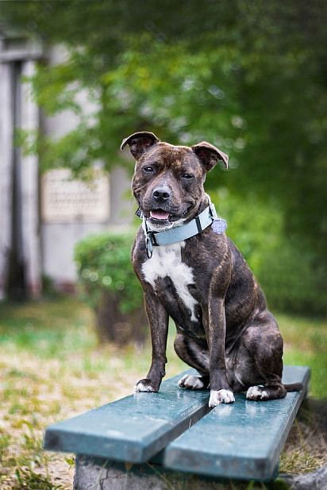
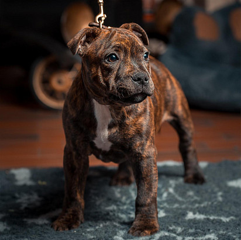
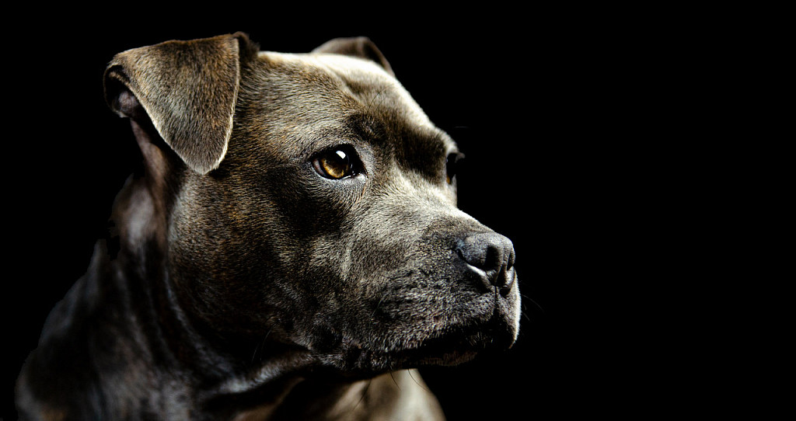
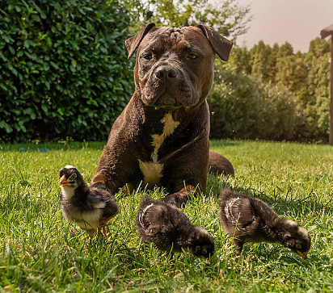
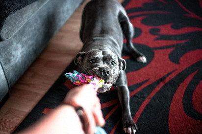
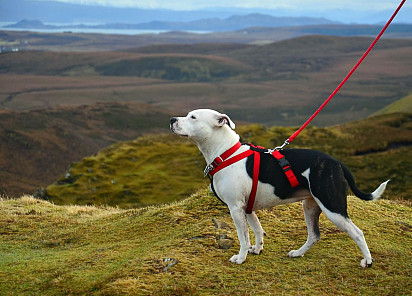
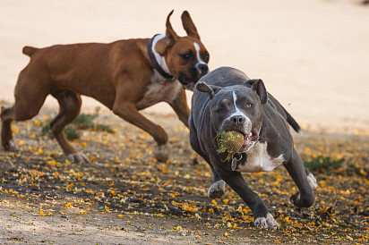

Стаффордширский бультерьер
Краткая информация
- Название породы: Стаффордширский бультерьер
- Страна происхождения: Великобритания
- Вес: кобели 12,7-17 кг, суки 11-15,4 кг
- Рост (высота в холке): 35,5-40,5 см, рост пропорционален весу
- Продолжительность жизни: 12-14 лет
Основные моменты
- У стаффордширского бультерьера имеется несколько альтернативных имен. Например, представителей этой породы часто именуют стаффбулями или просто стаффи.
- Охотничий инстинкт у собак развит слабо, как и сторожевые способности, поэтому пугать с помощью стаффбуля домушников – напрасный труд.
- Стаффордширский бультерьер вот уже несколько десятилетий является живым талисманом Стаффордширского полка принца Уэльского.
- Стаффбуль не та собака, которая будет сутками смотреть с вами сериалы, хотя иногда эти энергичные крепыши не прочь расслабиться. Порода живет в динамичном, если не сказать ускоренном темпе, и всегда предпочтет приятному ничегонеделанию хорошую пробежку или игру.
- Кобели стаффордширского бультерьера более агрессивны и склонны к соперничеству между собой, поэтому содержание двух «мальчиков» в одной квартире потребует от владельца терпения и выдержки.
- Стаффордширские бультерьеры – собаки, интеллект и сообразительность которых необходимо постоянно тренировать и развивать. Помимо того, они нуждаются в ранней социализации.
- У представителей этой породы высокий болевой порог, поэтому стаффи относительно спокойно переносят даже серьезные травмы.
- Стаффордширским бультерьерам противопоказаны как сильное переохлаждение, так и перегрев, из-за чего животных рекомендуют для домашнего и квартирного содержания.
- Стаффбули очень спортивны и при своевременной дрессировке демонстрируют высокие результаты в дог-фрисби, аджилити, фристайле, а иногда и в курсинге.
Стаффордширский бультерьер – внешне серьезный, но компанейский в душе здоровячок, обожающий все, что связано с двигательной активностью. Он немного задирист, в меру упрям и иногда охотно играет в альфа-самца, но все это такие мелочи по сравнению с преданностью породы хозяину и семье. Практически все стаффордширские бультерьеры обладают большим интеллектуальным потенциалом, который необходимо своевременно развивать, чтобы вырастить смышленого и понимающего друга. Стаффбулей называют лучшими собаками для тех, кто любит самостоятельно повозиться с дрессировкой, воспитав питомца «под себя».
Характеристика породы
- Агрессивность
- Умеренная (Рейтинг 3/5)
- Линька
- Низкая (Рейтинг 2/5)
- Здоровье
- Среднее (Рейтинг 3/5)
- Интеллект
- Умная (Рейтинг 4/5)
- Активность
- Высокая (Рейтинг 4/5)
- Потребность в уходе
- Средняя (Рейтинг 3/5)
- Стоимость содержания
- Среднее (Рейтинг 3/5)
- Шум
- Низкий (Рейтинг 2/5)
- Дрессировка
- Средне (Рейтинг 3/5)
- Дружелюбность
- Дружелюбная (Рейтинг 4/5)
- Отношение к одиночеству
- Не переносит (Рейтинг 1/5)
- Охранные качества
- Средние (Рейтинг 3/5)
История породы стаффордширский бультерьер
Стаффордширский бультерьер – порода, чье появление на свет было продиктовано не практической необходимостью, а жаждой наживы. В начале XIX века среди английской бедноты вошел в моду новый вид развлечений – собачьи бои. Каждый выходной толпы зевак стекались к какому-нибудь пятачку, где с восторгом наблюдали, как владельцы животных стравливают своих подопечных друг с другом. Здесь же делались ставки на победу, которые лишь сильнее разжигали интерес к дикому, но такому захватывающему «виду спорта».
Поначалу на ринге выступали преимущественно бульдоги, к которым позднее присоединились представители терьерной группы. Однако удерживать зрительское внимание животным удавалось с трудом. Пресытившийся стандартной травлей народ жаждал жестокого шоу, а получал очередную собачью разборку с изученными вдоль и поперек приемами. Чтобы не растерять зрителя, а вместе с ним и стабильный доход, хозяевам четверолапых бойцов пришлось изворачиваться и экспериментировать с генетической базой. Так на площадках стала появляться неизвестная до сих пор разновидность собак, именуемых буль-энд-терьерами.
Представители новой породы, появившиеся на свет в ходе скрещивания бульдога с английским терьером, превосходили своих предков в искусстве драки, да и вообще во всем, что касалось изворотливости, азарта и скорости реакции. Помимо выдающихся бойцовых качеств у животных обнаружился еще и мышеловный талант, поэтому показательная травля крыс с участием буль-энд-терьера быстро превратилась в излюбленное зрелище английских низов. Особенно преуспел в этом деле пес по кличке Билли, в 1823 году замахнувшийся на мировой рекорд. За каких-нибудь пять с лишним минут собака передушила 100 крыс, в свою очередь тоже не терявших времени и яростно атаковавших противника.
Дальнейшее разведение буль-энд-терьеров шло стихийно. В «творческих экспериментах» заводчиков никто не ограничивал, поэтому скоро в Англии сформировались три внутрипородных типа стаффи:
- крэдли – компактные, крепкие животные с развитым костяком;
- варластон – некрупные, в меру упитанные собаки с коротенькими бульдожьими ножками;
- варсол – наиболее близкий к терьерам тип с длинными конечностями и сухой конституцией.
Свой современный облик стаффордширские бультерьеры приобрели лишь во второй половине XIX века, причем обзавестись породным стандартом им удалось только в 1935 году, после того как собачьи бои в Великобритании были объявлены вне закона. Кстати, эталоном внешности породы был объявлен тот самый крэдли-тип, наделявший своих представителей коренастой конституцией и характерной костистостью.
Стандарт породы стаффордширский бультерьер
Стаффордширский бультерьер – гладкошерстный, коренастый крепыш с широкой грудью и умным, сканирующим взглядом. Не нужно быть суперкинологом, чтобы отметить внешнее сходство представителей этого семейства с питбулями и амстаффами. В то же время назвать английских стаффи точной копией заокеанских «коллег» никак нельзя. Собственных отличительных фишек у породы не так уж мало, поэтому увидев стаффбуля хотя бы раз и полчасика с ним пообщавшись, в дальнейшем вы его вряд ли с кем-то перепутаете. В частности, стаффордширский бультерьер гораздо улыбчивее тех же амстаффов и питбулей (развитые мышцы щек + растянутый в ширину череп). А еще он значительно уступает им в росте.
Голова
Череп животного производит впечатление компактного и широкого, стоп прорисован отчетливо. Морда стаффбуля заметно короче головы.
Челюсти и зубы
Сильные, развитые челюсти стаффордширского бультерьера обладают выдающейся хваткой. Зубы собаки белые, очень крупные. Прикус правильный, полный.
Нос
Мочка нормальной величины, окрашена в насыщенный черный оттенок.
Глаза
В идеале глаза животного должны быть округлыми, прямо поставленными, максимально темного оттенка. Но в реальности особи с более светлым, гармонирующим с окрасом шерсти оттенком радужки встречаются не так уж редко.
Уши
Небольшие, полустоячие уши стаффордширского бультерьера напоминают формой цветочный лепесток.
Шея
Одна из отличительных черт породы – короткая, плотная шея, делающая силуэт собаки еще более основательным и приземистым.
Корпус
Тело стаффбуля несколько растянутое, крепко сбитое. Спина идеально прямая, грудная клетка глубокая, сильно раздавшаяся вширь.
Конечности
Передние ноги стройные, с отведенными назад лопатками, сильными запястьями и смотрящими наружу лапами. Задние конечности собаки более мускулистые, с заметно наклоненными голенями и низко расположенными скакательными суставами.
Хвост
Хвост стаффордширского бультерьера сравнительно короткий, не закрученный, посажен низко.
Шерсть
Шерстный покров глянцевого типа, очень плотный и короткий.
Окрас
- Сплошной черный либо в сочетании с белым.
- Рыжий: сплошной или с белыми пятнами.
- Сплошной палевый либо разбавленный белым.
- Сплошной голубой или в сочетании с белым.
- Тигровый или тигровый с белым.
- Белый: сплошной, а также с черными, рыжими, палевыми, голубыми пятнами и тигровинами.
Дефекты и пороки породы
Часто среди стаффордширских бультерьеров можно встретить такие внешние недостатки, как плосковатая грудь, чересчур светлые глаза, подвес на шее, легкие косолапость или размет конечностей, висячие уши. В зависимости от степени выраженности перечисленные дефекты могут стать причиной для снижения оценки животному на выставке или поводом для запрета на участие в ней. При этом основными дисквалифицирующими пороками для стаффи остаются крипторхизм, дефекты прикуса (недокус, перекус с отходом, перекос нижней челюсти), печеночный и черный с подпалинами окрасы, а также иноходь.
Характер стаффордширского бультерьера
Бойцовое прошлое породы если и сказалось на характере современных ее представителей, то не столь значительно, как того можно было ожидать, поэтому сегодняшние стаффордширские бультерьеры – это вполне мирные и доброжелательные создания. Более того, это одна из самых человекоориентированных собак, хотя ее облик намекает на совершенно обратные качества. Психически здоровый и правильно воспитанный стаффбуль ничем так не дорожит, как дружбой с хозяином, расценивая общение с ним как наивысшую награду. Идете ли вы в магазин, едете на пикник или отправляетесь на городской пляж – стаффи рад сопровождать вас повсюду. Образно выражаясь, это та собака, которая с удовольствием станет тенью собственного владельца. Соответственно, если вы не готовы купаться в таком океане внимания и цените личное пространство, стаффордширский бультерьер не ваша порода.
Стаффбули не пищат от восторга при виде собак или кошек, что не превращает их в кровожадных и неуправляемых агрессоров. Естественно, погонять зазевавшегося котофея или дать сдачи зарвавшемуся четырехлапому противнику они всегда готовы, но подобным грешат практически все представители терьерной группы. Нередко собака соглашается делить территорию с другими мяукающими, лающими и пищащими питомцами, но только если их общество было навязано животному с самого детства. Вообще проявление бойцовых качеств по отношению к любым живым существам для стаффордширских терьеров нетипично, хотя исключения из правила имели и будут иметь место. Если вам попался тот редкий тип стаффи, который меряется силами со всем, что движется, – смиритесь. Вылепить из потомственного агрессора добродушного тюфячка не получится, сколько бы вы ни старались.
В ком стаффордширские бультерьеры не видят соперников, так это в детях. С ними животные неизменно ласковы и предусмотрительны. Особенно интересно наблюдать за трансформациями поведения питомца, когда на его пути встречается очередной карапуз. Минуту назад стаффбуль самозабвенно трепал шкуру случайно подвернувшейся дворняги, и вот он уже валяется на детской площадке в ожидании, что какой-нибудь малыш почешет ему пузико. Безусловно, общение животного и ребенка лучше контролировать, так как в искусстве провокации юное поколение достигло небывалых высот. И все же, как показывает опыт, конфликты между стаффи и завсегдатаями песочниц – явление исключительное.
Воспитание и дрессировка
Содержание собаки с бойцовым прошлым налагает на ее владельца ряд обязательств. В частности, обучение питомца основам поведения и его социализация – задачи, увильнуть от которых не получится при всем желании, так как невоспитанный и не понимающий команд стаффбуль – это всегда угроза. Да, уровень агрессии в отношении человека и братьев наших меньших у этой породы снижен, но это не значит, что ее представители совершенно безобидны.
Оптимальной программой дрессировки для стаффордширского бультерьера считается ОКД (Общий курс дрессировки), хотя упрощенные варианты вроде УГС (Управляемая городская собака) тоже не исключены. Прохождение ЗКС (Защитно-караульная служба) для стаффи необязательно, но на практике имеет место. При этом важно понимать, что какого-то фантастического телохранителя из представителя этой породы не выйдет. Во-первых, рост стаффордширского бультерьера не производит на хулиганов большого впечатления. Во-вторых, после того как животное пройдет обучение, все, на что вы сможете рассчитывать, – это облаивание приближающегося незнакомца и попытки атаковать врага, оказавшегося возле питомца на расстоянии 2-3 м. Вроде бы не так уж плохо, но, согласитесь, что лающий стаффбуль и клацающая зубами кавказская овчаркa – это две совершенно разных степени угрозы.
В обучении и воспитании стаффордширского бультерьера придется запастись терпением и поработать над утверждением собственного авторитета. Представители этой породы – существа упрямые, обожающие переиначивать предъявляемые к ним требования и действовать, руководствуясь собственными предпочтениями. При всем при том давить на стаффи не получится: эти собаки не выносят жесткости и в ответ на грубое обращение вообще перестают прислушиваться к приказам владельца.
Очень важно вовремя сформировать у питомца навык подчинения командам. Уверенным в стаффордширском бультерьере можно быть только в том случае, если он исполняет приказ сразу и без раздумий, именно поэтому специалисты не рекомендуют повторять команду дважды. Стаффбули – те еще хитрецы, в совершенстве овладевшие искусством манипуляции. Позвольте им единожды «не услышать» призыв, и впоследствии они заставят вас упрашивать их всякий раз, когда нужно что-нибудь сделать.
В воспитания крошечного щенка можно и нужно придерживаться стандартной программы. Сначала с малышом разучивают кличку, на которую он должен отзываться. Кстати, как и в случае с командами, повторами тут лучше не злоупотреблять. В 2,5 мес., если позволяет погода, со стаффордширским бультерьером можно выходить на улицу, вырабатывая у него привычку спокойно реагировать на незнакомые явления и звуки. Через 2-3 недели, когда щенок привыкнет к уличному шуму, ему необходимо подобрать компанию для общения. Оптимальный вариант – небольшая тусовка из нескольких щенков и взрослых флегматичных особей, в которой юный стаффи должен занять соответствующую иерархическую нишу.
Стаффордширский бультерьер – увлекающаяся и эмоциональная собака, поэтому монотонные уроки ей надоедают. Для лучшего усвоения питомцем учебного материала часовое занятие рекомендуется разбивать на пятиминутки, в перерывах между которыми четверолапому школяру позволяется вволю подурачиться и поиграть. Помните и о том, что у щенков стаффордширского бультерьера преобладает кратковременная память, благодаря которой малыши схватывают новые знание в доли секунды и столь же быстро их забывают. Так что не пытайтесь вместить в одно занятие кучу приемов. Лучше полноценно отработайте одно умение, оттачивая его до совершенства при последующих тренировках. Начинать обучение щенка стаффордширского бультерьера лучше с элементарных динамических навыков, то есть с подхода на зов хозяина, подноса игрушки, движения рядом с человеком во время прогулки (без натяжения поводка). Когда материал будет усвоен и отработан до автоматизма, его можно и нужно дополнить, так как лучшим методом обучения стаффбулей был и остается принцип «от простого – к сложному».
